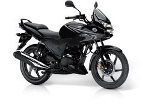
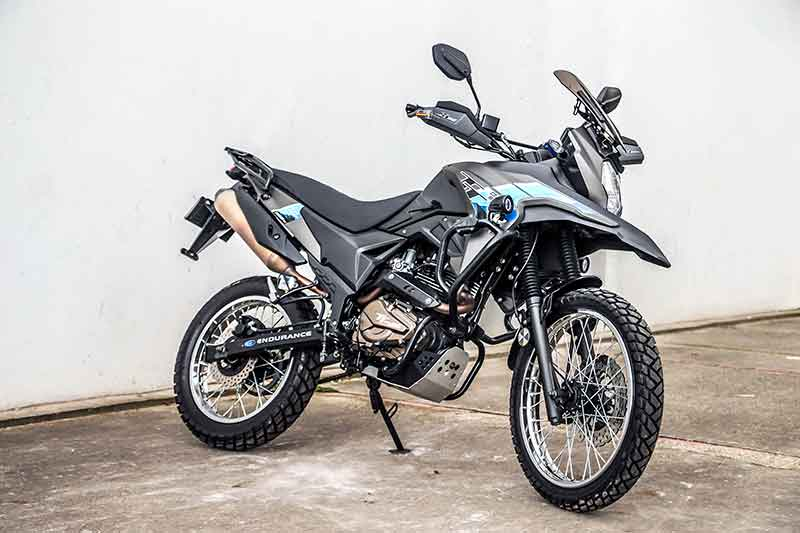
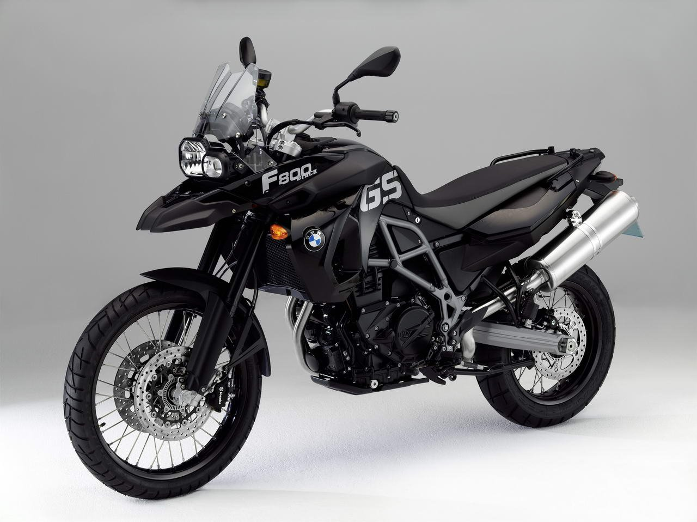
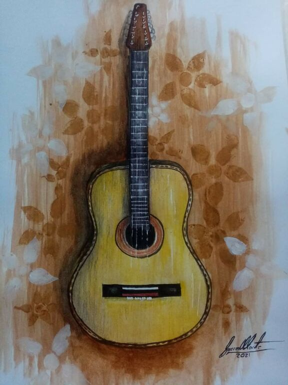
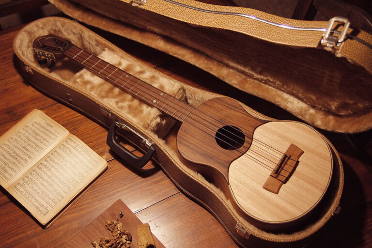

Gustos y Hobbies
- Motos
- Cocina
- Música
Soy un apasionado por las motos y me gusta viajar en ellas, algún día espero tener una moto de alto cilindraje.
Estas son algunas de las motos que eh tenido:




Esta es la moto que espero algun dia tener

Otro de mis hobbies es practicar cocina Gourmet, me gusta preparar diferentes recetas de cocina internacional y por supuesto cocina Colombiana, les comparto dos de mis recetas favoritas:
Otra de mis pasiones es la música, actualmente ejecuto dos instrumentos de cuerda haciendo énfasis en el folclor Colombiano.
El primer instrumento que ejecuto es el cuatro, instrumento representativo de la música de los llanos orientales. Sin embargo este instrumento es muy polifacético ya que puede ser utilizado en diferentes rítmos musicales.
Otro instrumento es el Tiple Colombiano, con el cual interpreto ritmos andinos como bambucos, pasillos y torbellinos.

